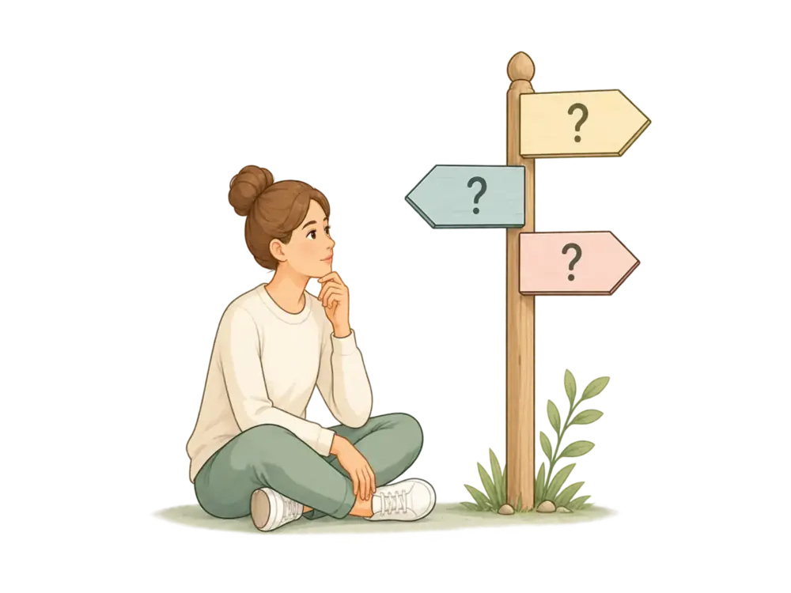
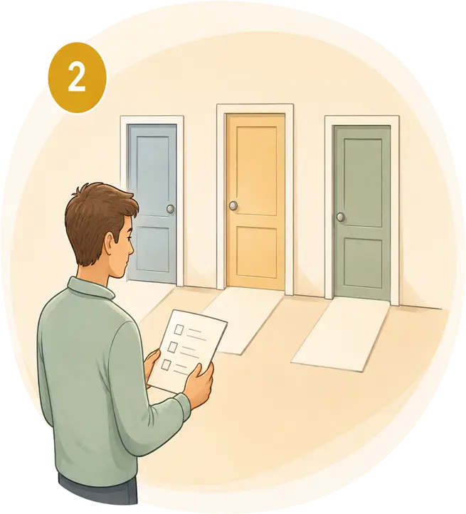
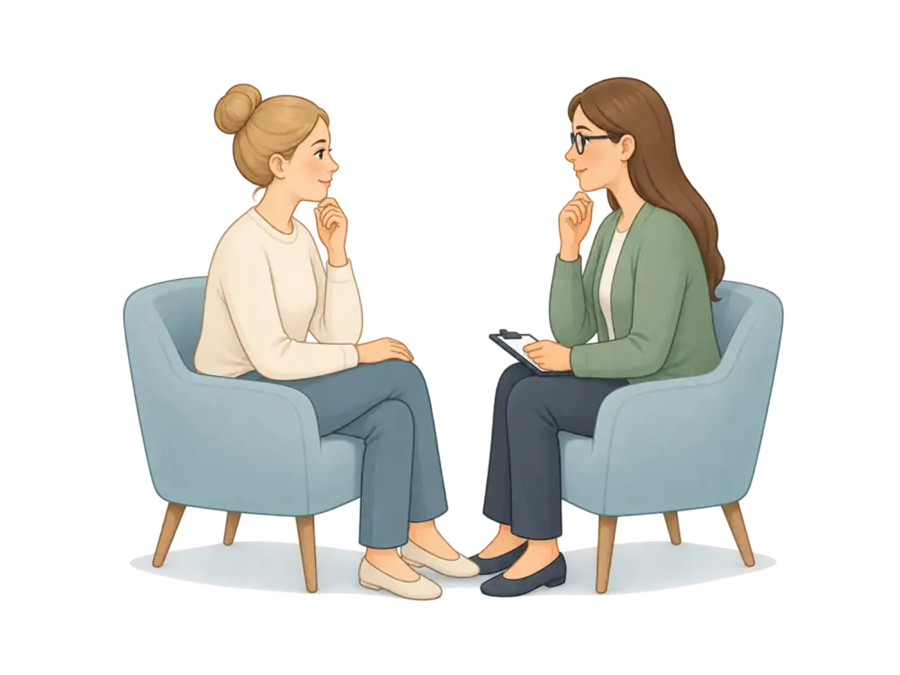
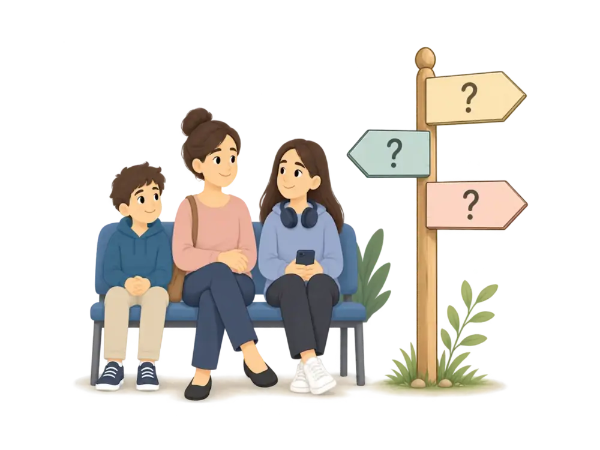

INDEPENDENT UK ADHD INFORMATION
Useful ADHD information. For any step of the way.
Whether you’re just wondering about ADHD, comparing assessment options or already in the queue, find out what to expect, what you may be asked for and what’s worth checking along the way.
Choose your free ADHD assessment checklist
No account · No email address · Nothing entered is sent to ADHD Junction
Choose where to start

I think I might have ADHD
What ADHD actually is, the free self-screener, and when an assessment may be worth considering.

I’m choosing an assessment
Compare NHS, Right to Choose and private routes, and what each one involves.

My assessment is already booked
What to expect, what to have ready, and what happens after the appointment.

I think my child might have ADHD
Where to start for a child or teenager, and how school and the young person’s own view fit in.
FREE TOOLS
Three practical things you can use today
No account, no email address, nothing sent anywhere. Fill them in on screen or print them.
My ADHD Reflection Record
Organise what you have noticed about yourself, with real examples you can actually recall later.
CHECKLISTConsidering an ADHD assessment?
What to ask each provider, what to check before you commit, and somewhere to record the answers.
CHECKLISTAlready booked an ADHD assessment?
Appointment details, the questions you want to ask, and a record of what you are told afterwards.
If you know your route and just want to book
Adult or child, NHS, Right to Choose or private: follow the practical steps and check what matters before you commit.
WHY ADHD JUNCTION EXISTS
Good assessment information shouldn’t depend on selling you an assessment
Much of the information people find while comparing ADHD assessment options comes from organisations providing those services. ADHD Junction exists to give you somewhere independent to check the questions, costs, routes and practical details that matter before and after you choose.
Providers cannot pay for ranking or favourable coverage. Sources are shown, and where the answer is uncertain, we say so.
We would rather leave uncertainty visible than fill it with certainty.
WHO WRITES THIS
Peter Corkhill
Content Editor
Writes and edits the guides, worksheets and comparison material.
Neill Hughes
Clinical Editor · MBACP (Accred.)
Person-centred and cognitive behavioural psychotherapist, certified schema therapist (ISST).
INDEPENDENT BY DESIGN
- No paid-for rankings
- No account required
- Answers aren’t sent to ADHD Junction
- No diagnosis by quiz
- Sources shown